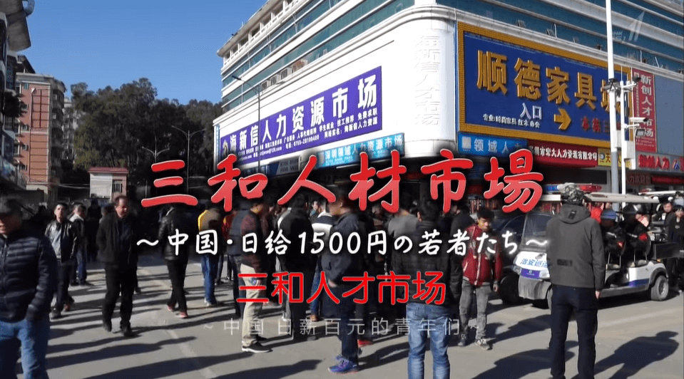

NHK纪录片截图
随着日本NHK电视台纪录片《三和人才市场・中国日结百元的青年们》的播出，网络上又出现一波关注“三和大神”的小高潮。与之前大部分国内带有猎奇眼光的报道不一样，NHK纪录片试图探讨“三和大神”背后的社会结构。
三和日结零工很多都是留守儿童出身，他们有的是因为交不起学费去打工赚钱，打工期间学籍被注销。纪录片中也提到，一位受工伤的一代移民工人勤苦劳动在深圳开店，他的女儿却不能在深圳入学，只能回家做留守儿童。三和的日结零工也颠覆了人们对移民工人的刻板印象，原来并不是所有“农民工”都想勤奋打工赚钱。这些结构性的解读让人们得以窥见“三和大神”困境的一角。